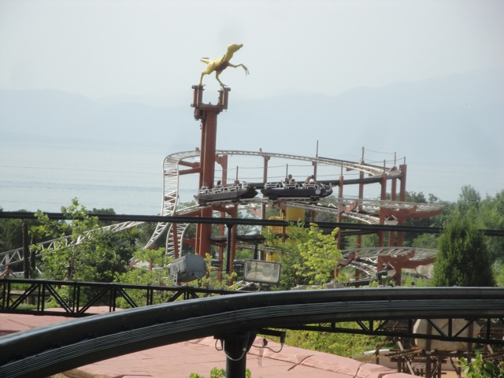
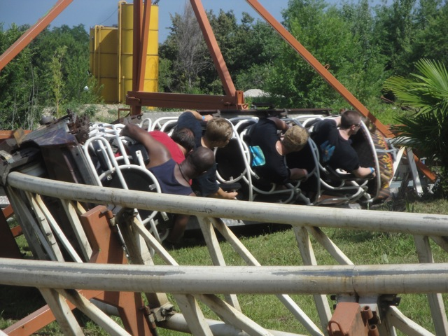

| |
Brontojet Review

We're here at Movieland Stidops. Today's ride we'll be reviewing for you is Brontojet. You might not think much of it, but this is a fairly unique type of ride since It's one of the few remaining Schwarzkoph City Jets in existance. So that's a unique treat for us (Movieland Studios has a lot of those). So buckle up and here we go. We head up the Spiral Lifthill, which offers us not only a nice view of the park, but also of Lake Garda. Anyways, we head down a curved drop, get some speed, and whip around a low to the ground turn before rising up another curved hill, before coasting around the spiral lifthill. Hey, it's not anything amazing, but I will admit that it is fun. We coast around the turnaround, getting another nice view of Lake Garda before we get some headchoppers, going right under the earlier parts of Brontojet as we head down another curved drop and straight into another low to the ground turn just before we rise up another small curved hill. I think I'm starting to see a pattern with this ride. Well, it starts to get a little different as we go into this small dip as we circle around the spiral lift. We go around another turn, down a small dip, and turn into the final brakes. Hmm, not an amazing ride by any means, but it's a fun little ride. It's got some charm, a little bit of a uniqueness to it, and of course, it's one of the few rides at Movieland Studios and currently their only roller coaster. So yeah. Definetly hop on board for a ride. It won't blow you away, but you might crack a smile.
5/10
Location: Movieland Studios
Opened at Lightwater Valley in 1996
Relocated to Londoun Castle in 2002
Relocated to Movieland Studios in 2010
Built by: Schwarzkopf
Last Ridden: June 21, 2012
Whizzer Photos



|